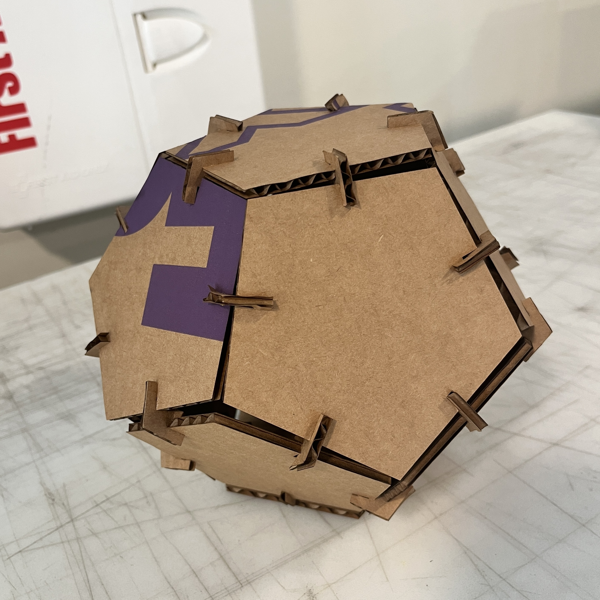
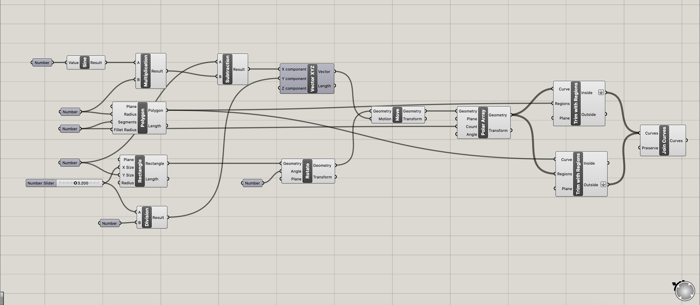
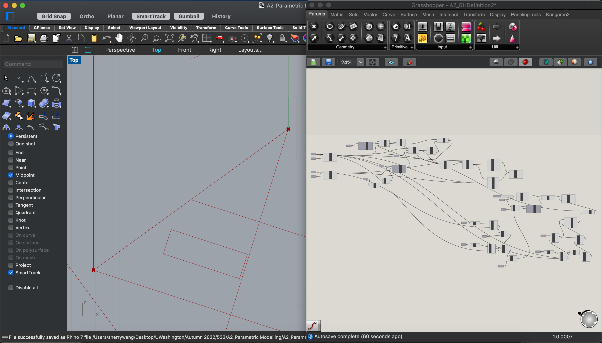
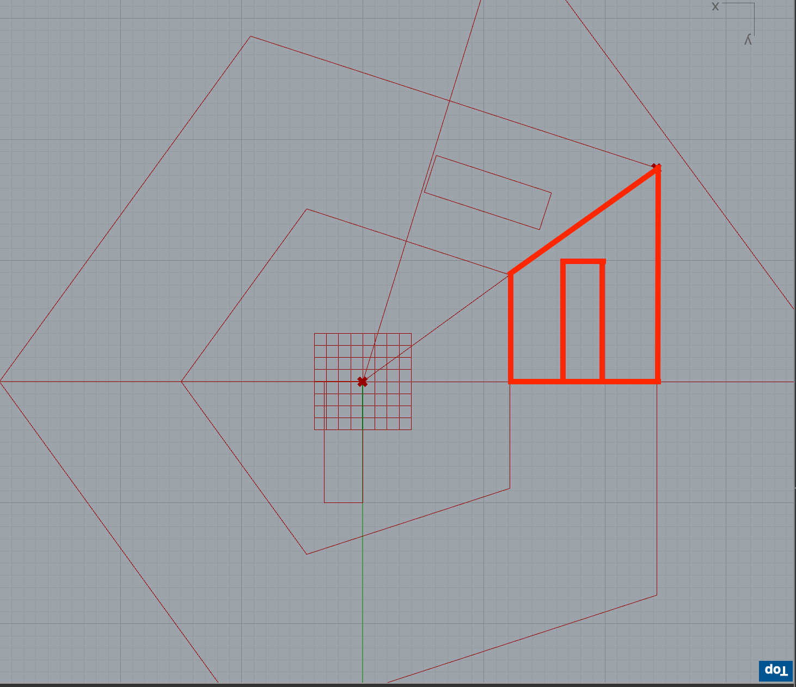
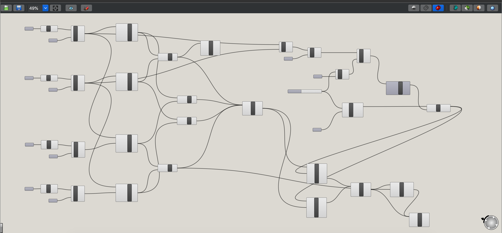
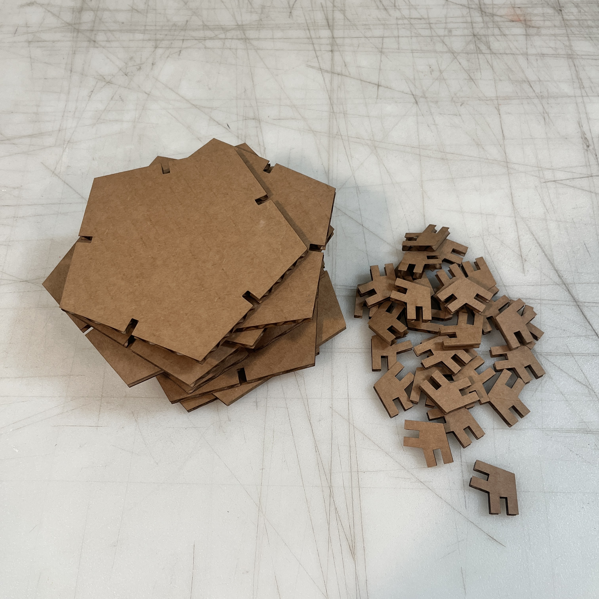

Assignment 2: Parametric Modelling with Grasshopper
By Sherry Wang
Here is the finished and assembled piece, including 12 large pentagons and 30 small connecting pieces:

I wanted to inherit my assignment 1's idea but did a little (turned out to be a LOT) improvements. Instead of using circles to build a dodecahedron, I decided to use pentagons. I got inspired from this student's previous homework:

Here's the link: Matt Blackshaw's Homework from MIT
To be clear, this person did not build a parametric model. And as I did all the calculations for dodecahedrons and pentagons in the last assignment, I used all those insisting data and started building.
Before diving deep into the Grasshopper definition and explanation, here's a screenshot of the final shapes:

I continued using the cardboard leftovers from assignment 1, which have slightly different thickness, ranging from 3.3mm to 3.9mm. Last time during assembling, the pieces were a little too tight, so for this project I decided to go with 3.2mm as the width of my gaps, instead of the original 3.0mm.
Here comes the Grasshopper talking. Keep in mind that the thickness of the cardboard can be varied as required, as I set it as a number slider and linked everything based on it. If you download the GH files, you can see sticky notes indicating where to slide and where to bake.
I started by making the pentagon. Here's a complete screenshot of the definition:

Since we went over a circular example in class, I repeated a similar procedure for this part.
One thing different and difficult was that when creating a polygon in GH, it asked for a radius and I put in an integer. However, when I was moving the rectangular gap to a desired position, the radius was no longer helpful. I needed to calculate the height and the side length of the pentagon using sine, cosine, and tangent. And because of the shape, the angles were 54°, 72°, 108°, etc., so I also needed to convert from degrees to radians.
This was the first time I realized this idea might be a mistake, but I soldiered through, naively.
Once the pentagon was finished, I baked it, saved it, and moved on to the connecting parts.
Let's take a look at the reference picture I found:

Doesn't seem so complicated, I thought. I would just create two smaller pentagons, trim out the inner part, then draw two vertical lines and trim again. The gaps should be even easier, attach the midpoints together and we're good to go!
Boy was I wrong. With Grasshopper, I can't draw vertical lines easily, I can't trim the curves using curves, I can't find all the midpoints I want, and for some reasons my Math bachelors degree can't help me get all the calculations right.
Here's how far I went:

With all this effort, the second rectangle missed its edge by 0.x millimeters. It probably would look okay after being laser-cutted. But as a perfectionist, I started over.
This time, I realized that I needed to think outside the box.
Instead of drawing and trimming, I could calculate the coordinates of each points, create lines between them, and bam we have a trapezoid.
The same thing could happen with the rectangle. Once half of the piece is done, I can trim out the part and then mirror it around one side as an axis.

Before working with GH, I also wrote down all the equations and formulas on a piece of paper.So here's the second and successful version of the connecting piece:

This screenshot looks massive, but some were repetitive work and looked much more organized.
Besides still using sine, cosine, and tangent in the calculations, I also spent quite some time figuring out how far the rectangular gap should move. Because I had coordinates of points instead of lengths of lines, I needed to alter the formulas.
Another thing was that I also used the mirror function. Thanks to me creating the shape through lines, I was able to use one side as an axis and mirrored the piece.
Once the connecting piece was also finished, I baked it.
I had to use Rhino to trim away the axis/line lying in the middle of the piece. But other than that, all was done in Grasshopper.
When laser-cutting the pieces, I did exactly the same as Assignment 1. Exported the file to Adobe Illustrator, went to the MILL, set the laser cutter to speed 25, power 40, freq 10, etc.
And finally here's the output!

Source files:
Grasshopper definition of pentagons
Grasshopper definition of connecting pieces
Rhino file of all pieces
Adobe Illustrator file of curves for cutting
Acknowledgements:
Never thought my Math degree and CS minor can make to the list but here they go!
I finished the assignment pretty early, so I will be helping others this time!